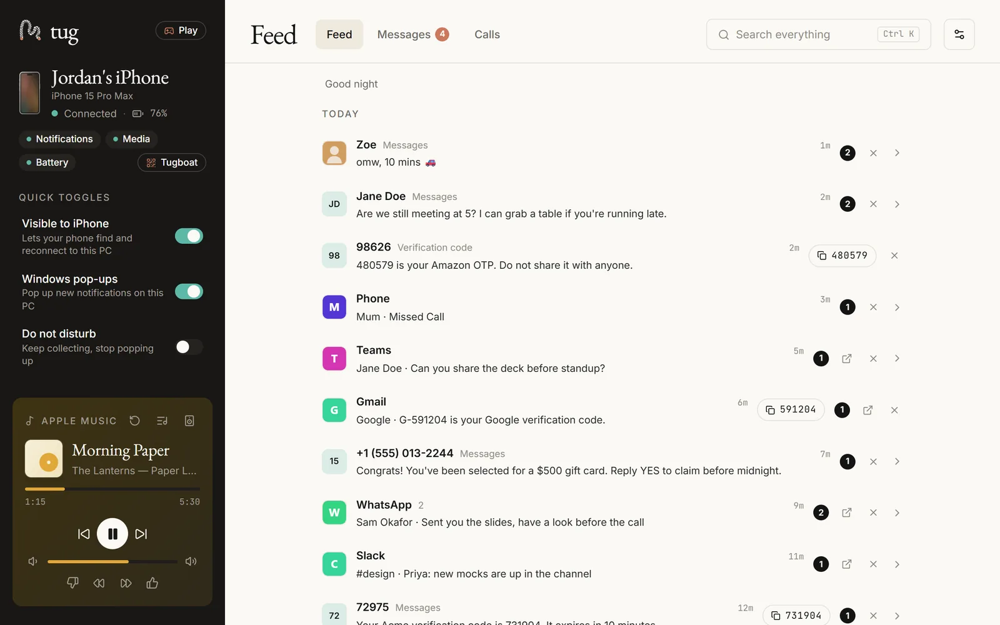
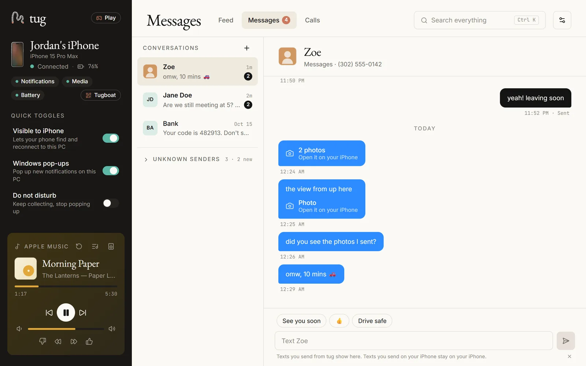
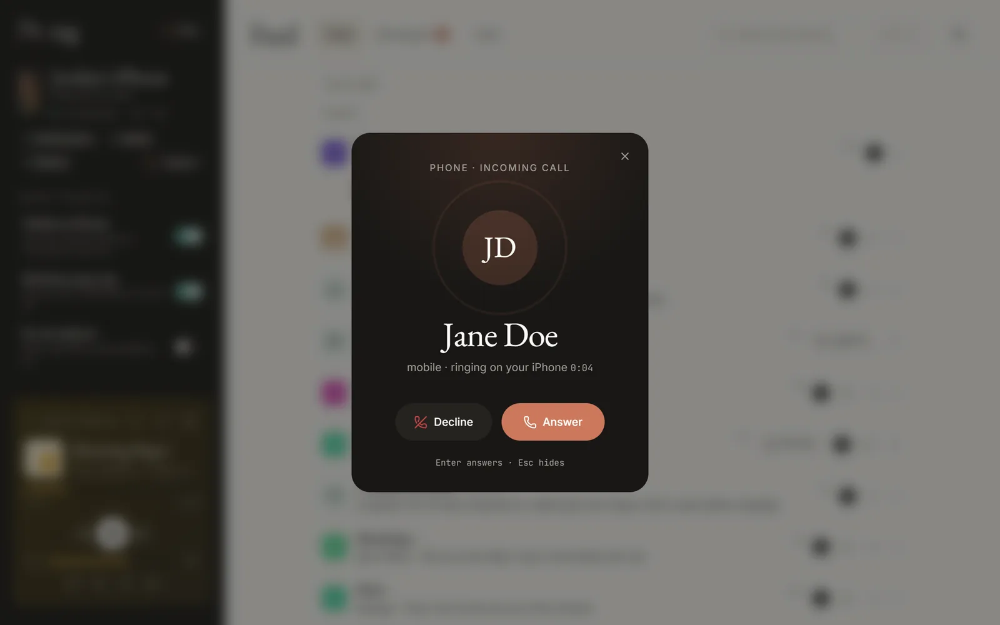
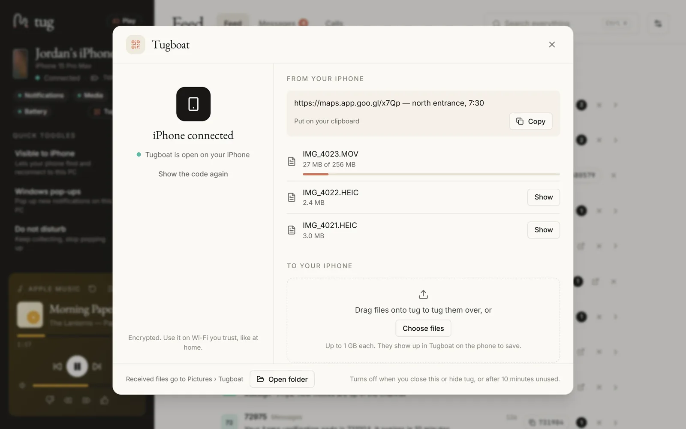
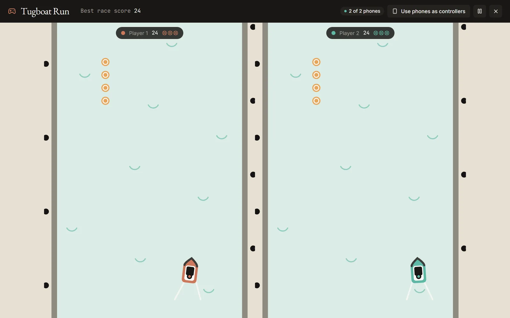
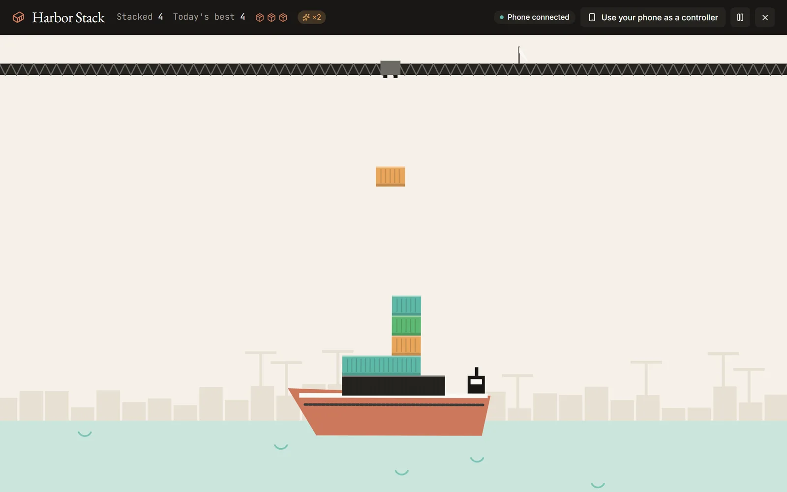
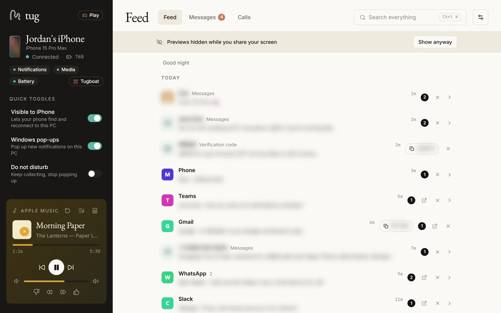
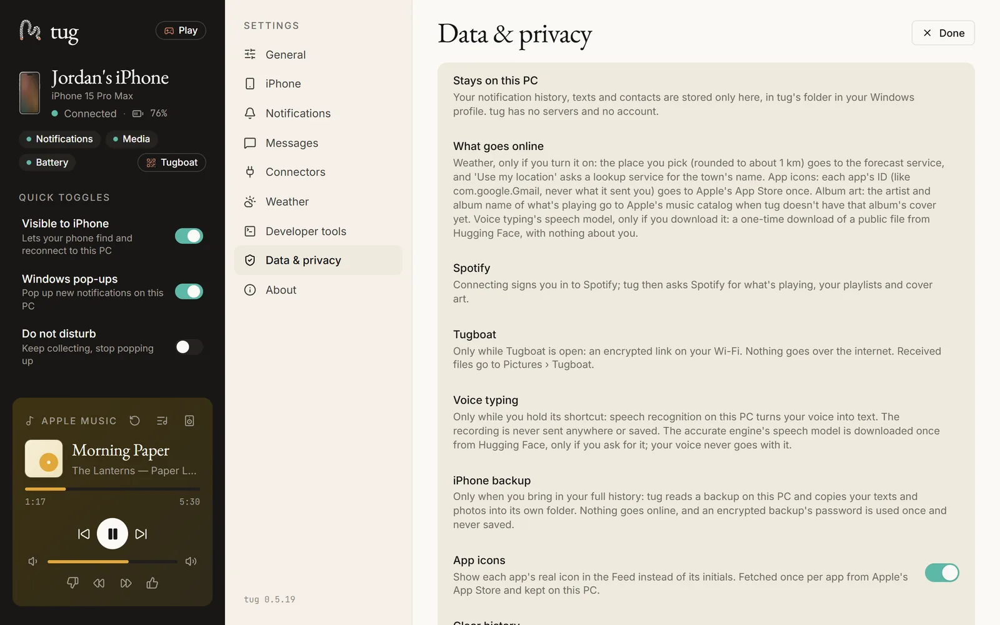

Your iPhone, on your PC.
tug brings your iPhone's notifications, texts, calls and music to your Windows PC over Bluetooth, the way a smartwatch or a car kit does.
The latest release from GitHub · Windows 10 (2004+) or 11 with Bluetooth · iPhone · MIT licensed
- No app on your phone
- Nothing leaves your PC
- No account

Everything your phone tells you, where you're already working.
Pair once over Bluetooth. tug uses what iOS already shares with accessories, so there's nothing to install on the iPhone.
-
Notifications
Every app's notifications in one Feed and as Windows pop-ups. Clear one and it clears on your iPhone too; reply to a text right from the pop-up. Quiet hours and VIPs included.
-
Texts
Send and receive from your keyboard, with smart replies picked on your PC and verification codes ready to copy. Bring in your full history, photos included, from an iPhone backup.
-
Calls
A ringing card shows who's calling, with Answer and Decline on the iPhone. Recent calls, and call back a missed call in one click.
-
Music
Now Playing with album art, controls, volume and your keyboard's media keys. Turn your PC into a Bluetooth speaker for your iPhone.
-
Tugboat
Photos, files, text and your clipboard, both ways over your Wi-Fi. Scan a code with the phone's camera; it's encrypted, and there's still no app to install.
-
Voice typing
Hold a shortcut, talk, let go: tug types what you said into any app. Accurate recognition with Whisper, running on your PC. Your voice is never sent or saved.
-
Two little games
Tugboat Run and Harbor Stack, with a daily challenge in your real weather and two-player modes. Hold your phone sideways and it's the controller.
-
Private by design
Everything stays on your PC: no servers, no account, no analytics. Previews hide themselves while you share your screen or present.
-
Developer tools
An MCP server and the
tugcommand let Claude Code, Codex, Cursor and VS Code use your phone. Off until you turn it on, and nothing is sent without your click. -
Automatic updates
New versions download quietly and are checked against tug's signing key. tug restarts only when you click Update.
Calm, clear, and out of your way.
Screenshots from tug's preview mode with made-up people and data.






Pair once. Everything shows up.
-
Install tug
Download the installer from GitHub. It installs for your Windows account only, with no admin rights.
-
Pair your iPhone
Open Settings › Bluetooth on the iPhone, click Pair in tug, check the codes match and tap Allow.
-
That's it
Notifications, texts, calls, music and battery arrive on their own, and tug reconnects by itself whenever the phone's nearby.
Your phone, your PC, and nobody in between.
- No servers, no account, no analytics, no telemetry. There's nothing to sign up for.
- Your notifications, texts and contacts are kept in a database on your PC, and nowhere else.
- The few things that go online, like the weather or album art, are listed plainly, only happen for features you use, and most can be switched off.
- Tugboat stays on your Wi-Fi, encrypted. Voice typing runs on your PC.
- Open source under the MIT licence, so anyone can check.

The honest limits.
tug works with what iOS shares with Bluetooth accessories. That's what makes it work with no app on the phone, and it's also where these come from.
- Windows 10 or 11 with BluetoothWindows 10 version 2004 or later, on an x64 PC, with a Bluetooth adapter that can act as a peripheral (most Bluetooth 5 adapters can).
- iPhone firstAndroid phones can't pair with tug yet. Tugboat does work from Android browsers.
- Texts sent from your iPhoneiOS doesn't share them over Bluetooth, so they come in only through the backup import, as of the backup's date.
- The installer isn't code-signed yetWindows SmartScreen may warn. Click More info, then Run anyway. Updates are still checked against tug's signing key.
Questions.
Is tug really free?
Yes. tug is free and open source under the MIT licence. There are no ads, no subscriptions and no account.
Do I need to install anything on my iPhone?
No. tug pairs with your iPhone the way a smartwatch or a car kit does, using what iOS already shares with Bluetooth accessories. Tugboat opens a small web page in Safari when you scan its code; nothing gets installed.
Why does Windows warn me when I run the installer?
The installer isn't code-signed yet (it's planned), so SmartScreen shows "Windows protected your PC". Check the file came from tug's Releases page, click More info, then Run anyway. Each release lists a SHA-256 checksum you can compare.
On some fresh Windows 11 installs, Smart App Control blocks unsigned apps with no Run anyway. If it does, tug can't be installed on that PC until releases are signed. More in the setup guide.
Does it work with Android?
Not yet. tug pairs with iPhones only for now. Tugboat, the Wi-Fi file and clipboard sharing, works from Android browsers today.
Will I see the texts I send from my iPhone?
Texts you send from tug show up in tug. Texts you send on the iPhone itself aren't shared over Bluetooth by iOS, so tug can bring them in from a backup of your iPhone on this PC (Settings › Messages › Bring in your full history), as a snapshot as of the backup's date. On a fresh install iOS also shares only the newest 10 incoming texts; everything after that is kept in tug.
Does anything go to the cloud?
tug has no servers of its own. A handful of optional features talk to outside services, each listed with exactly what's sent: the weather forecast, app icons and album art from Apple, Spotify if you connect it, GitHub for updates, and the one-time voice model download. See the privacy page.
Can AI tools send texts on their own?
No. Developer tools are off until you turn them on, each ability has its own switch, and a text or file from an AI tool is only sent after you click Send on tug's card within 2 minutes. More for developers.
How do updates work?
tug checks GitHub for a new version, downloads it quietly and checks it against tug's signing key. An Update button appears, and tug only restarts when you click it (or quit from the tray). You can turn automatic downloads off in Settings › About.
What languages does tug speak?
The app is in English for now. Accurate voice typing is English only; Basic voice typing uses Windows' own recognizer in any language Windows has speech for.